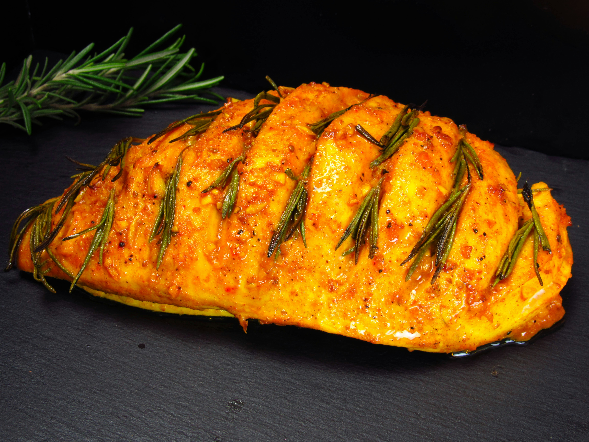

Baked Chicken Breast
Back to Homepage

An easy recipe for baked chicken breast for two that is marinated in Mediterranean flavors like lemon juice, olive oil, garlic, and herbs.
Ingredients:
- 2 (8 ounce) skinless, boneless chicken breasts
- salt and freshly ground black pepper
- ¼ cup olive oil
- ¼ cup freshly squeezed lemon juice
- 1 clove garlic, minced
- ½ teaspoon dried oregano, or more to taste
- ¼ teaspoon dried thyme, or more to taste
Steps:
- Season chicken breasts with salt and pepper on all sides and place in a bowl or lidded container. Combine olive oil, lemon juice, garlic, oregano, and thyme in a small bowl and pour marinade over chicken breasts. Marinate for 10 minutes at room temperature.
- Preheat oven to 400 degrees F (200 degrees C). Set one oven rack about 6 inches from the heat source.
- Place chicken breasts into a baking dish and pour marinade on top.
- Bake chicken on the middle rack of the preheated oven until no longer pink in the center and the juices run clear, 35 to 45 minutes, depending upon thickness. Move baking dish to the top rack and broil chicken until well browned, about 5 minutes.